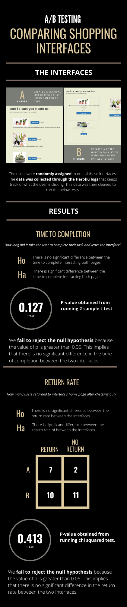

Created UI variants
User Design
A/B Testing
VS Code (Python)
Canva
Heroku
One way to see if your redesigns are likely to perform better is by carrying out A/B testing. This mechanism allows us to compare variations of a product (in this case, a website) by executing statistical analysis, which gives us more insight into the two different UI designs created.
Make and Deploy the Website.
Create Hypotheses for Statistical Tests.
Collect Data and Apply scripts to run the Statistical Tests.
I built two versions of a simple plant shopping page. They can be viewed here. In the following figure, I present the infographic of the process and its results.
Both versions had a similar effect in terms of return rate and time of completion. Therefore, we can deploy any one of these versions.
One of the main drawbacks of the test is that the user data gathered is too small. I would need to collect more to make more accurate conclusions..
Based on the drawbacks and results, the exercise demonstrates that certain visual elements don’t make a significant difference in certain scenarios. To create a substantial difference, we would need to research and learn more about which aspect of the visual interface would make a difference.